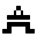

 晶体管
| 库: | 线路 | ||||||
| 介绍: | 2.7.0 | ||||||
| 外观符号: |
|
行为
晶体管有两个输入，称为栅极和源极，以及一个输出，称为漏极。 绘制图表时，源极输入和漏极输出通过极板连接； Logisim-evolution 绘制箭头来指示从输入到输出的流向。 栅极输入被绘制为连接到一个板，该板与连接源极到漏极的板平行。
| gate | gate | |||||
| source |

|
drain | source |

|
drain | |
| N-Type | P-Type |
Logisim-evolution 支持两种类型的晶体管，其行为略有不同，如下所述； P 型晶体管由连接栅极输入与其极板的圆圈表示，而 N 型晶体管则没有这样的圆圈。
根据gate处找到的值，source处的值可能会传输到drain； 或者可能没有来自源的连接，因此漏极保持浮动。 发送或断开的决定取决于晶体管的类型： P 型晶体管（用 gate 线上的圆圈表示）在 gate 为 0 时发送，而 N 型晶体管（没有这样的圆圈）在 gate 为 1 时传输。下表总结了该行为。
| P-type | N-Type | |||||||||||||||||||||||||||||||||||||||||||||||||||||||||||||||||||||
|---|---|---|---|---|---|---|---|---|---|---|---|---|---|---|---|---|---|---|---|---|---|---|---|---|---|---|---|---|---|---|---|---|---|---|---|---|---|---|---|---|---|---|---|---|---|---|---|---|---|---|---|---|---|---|---|---|---|---|---|---|---|---|---|---|---|---|---|---|---|---|
| G | G | |||||||||||||||||||||||||||||||||||||||||||||||||||||||||||||||||||||
| S |
|
D | S |
|
D | |||||||||||||||||||||||||||||||||||||||||||||||||||||||||||||||||
|
|
|||||||||||||||||||||||||||||||||||||||||||||||||||||||||||||||||||||
或者总结形式：
|
|
|||||||||||||||||||||||||
* 如果源为U，则漏为U； 否则流失是E。
注意：由于 Logisim-evolution 使用标记 U（高阻抗/未定义）和 E （错误）我在插图中使用了相同的内容，而不是其他文档中更常见的 Z（高阻抗）和 X（错误）
如果数据位属性大于1，则门输入仍然是单个位，但其值同时应用于每个源输入的位。
N 型晶体管的行为与受控缓冲器非常相似。 主要区别在于晶体管适用于更基本的电路设计。
引脚（假设元件朝东，栅极线顶部/左侧）
- 西边（输入，位宽与数据位属性匹配）
- 如果由门输入触发，元件的源输入将传输到输出。
- 北边（输入，位宽1）
- 元件的门输入。 对于P型晶体管，如果gate值为0，则晶体管将传输； 对于 N 型晶体管，如果 gate 值为 1，这将触发晶体管。
- 东边（输出，位宽与数据位属性匹配）
- 元件的输出，如果由 gate 输入指示，则将与 source 输入匹配，或者如果 gate 输入为负，则将浮动 什么表示否定。 如果 gate 是浮动值 (U) 或错误错误值 (E) 值，则 输出将是一个错误值 (E)。
属性
选择或添加元件时，Alt-0 到 Alt-9 会更改其 数据位 属性和箭头键更改其方向 属性。
- 类型
- 确定晶体管是 P 型还是 N 型。
- 方向
- 元件的方向（其输出相对于其输入）。
- 门位置
- 门输入的位置。
- 数据位
- 元件输入和输出的位宽度。
Poke 工具行为
无
文本工具行为
无
返回 电路元件库手册